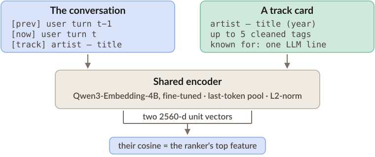
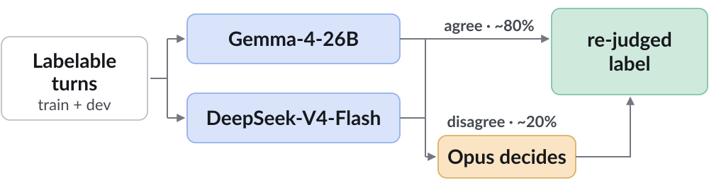

What the system reads off a conversation
Earlier turns: we played Neko Case’s “Calling Cards”
(“not quite the one”), then “Man” (“not it either”).
User, now: “…much more subdued… a specific sense of
place in the lyrics… a somewhat stark, almost a cappella delivery.”
extracted state
anchor artistNeko Case (must use) · earlier turns
rejected“Calling Cards”, “Man” · earlier turns
facetsmood = subdued · theme = sense of place
sonic = stark, almost a cappella
sonic = stark, almost a cappella
requesthidden_target
The full schema: request type · intent mode · anchors and pinned tracks · per-track feedback · rejected tracks and artists · hard filters · mood, genre and sonic facets · process constraints · routing flags · lyrical theme · release-year window.
What the ranker leans on
| Feature family | Share of gain |
|---|---|
| Bi-encoder cosine | 59.0% |
| Per-branch rank and score | 11.5% |
| Session and artist affinity | 10.7% |
| Popularity · state · tags | 9.2% |
| Other similarity cosines | 8.9% |
| Constraints and rejections | 0.7% |
LightGBM LambdaMART · 146 features per (turn, track) pair.
The bi-encoder behind that top feature

How it scored
| Official split | nDCG@20 | Judge | Composite |
|---|---|---|---|
| Blind-A · development phase | 0.4380 | 4.70 | 0.5799 |
| Blind-B · final, 29th of 40 | 0.2537 | 3.30 | 0.3811 |
What is not ideal
The ranker was trained on the same 8,000 dev turns we evaluated it on offline.
The listener asked forOur top pick
We extracted more than we used
the Kamelot track
from Silverthorn → Kamelot — Fallen Star,
from HavenWe extracted “Silverthorn” but never filtered on it; 3 of its tracks are in the catalog
from Silverthorn → Kamelot — Fallen Star,
from HavenWe extracted “Silverthorn” but never filtered on it; 3 of its tracks are in the catalog
No tempo or key data to match on
exactly 126.70 bpm,
in G minor → nothing in the catalog
records tempo or key
in G minor → nothing in the catalog
records tempo or key
The reply said “Got it” for a track we did not have
“Watercolors”
by Pat Metheny → Metheny — Alfie, with the reply
“Got it — here’s ‘Alfie’…”“Watercolors” is not in the catalog
by Pat Metheny → Metheny — Alfie, with the reply
“Got it — here’s ‘Alfie’…”“Watercolors” is not in the catalog
The training labels often ignore the request
User: “…similar chill vibe, but from a different
artist?” (just played: Bonobo)
Target: Bonobo — “Jets”
· annotated MOVES toward goal
Next turn: “…hoping for something from a different
artist this time…”
Target: Bonobo — “Pieces”
· annotated MOVES toward goal
The label is whatever played next in an LLM-generated session, even when the listener had just asked for something else.
Our fix: two LLM judges re-score the labels
